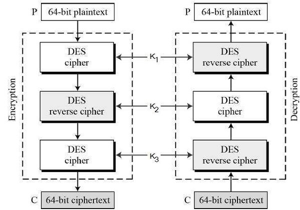

The speed of exhaustive key searches against DES after 1990 began to cause discomfort amongst users of DES. However, users did not want to replace DES as it takes an enormous amount of time and money to change encryption algorithms that are widely adopted and embedded in large security architectures.
The pragmatic approach was not to abandon the DES completely, but to change the manner in which DES is used. This led to the modified schemes of Triple DES (sometimes known as 3DES).
Incidentally, there are two variants of Triple DES known as 3-key Triple DES (3TDES) and 2-key Triple DES (2TDES).
Before using 3TDES, user first generate and distribute a 3TDES key K, which consists of three different DES keys K1, K2 and K3. This means that the actual 3TDES key has length 3�56 = 168 bits. The encryption scheme is illustrated as follows -

The encryption-decryption process is as follows -
Encrypt the plaintext blocks using single DES with key K1.
Now decrypt the output of step 1 using single DES with key K2.
Finally, encrypt the output of step 2 using single DES with key K3.
The output of step 3 is the ciphertext.
Decryption of a ciphertext is a reverse process. User first decrypt using K3, then encrypt with K2, and finally decrypt with K1.
Due to this design of Triple DES as an encrypt�decrypt�encrypt process, it is possible to use a 3TDES (hardware) implementation for single DES by setting K1, K2, and K3 to be the same value. This provides backwards compatibility with DES.
Second variant of Triple DES (2TDES) is identical to 3TDES except that K3is replaced by K1. In other words, user encrypt plaintext blocks with key K1, then decrypt with key K2, and finally encrypt with K1 again. Therefore, 2TDES has a key length of 112 bits.
Triple DES systems are significantly more secure than single DES, but these are clearly a much slower process than encryption using single DES.